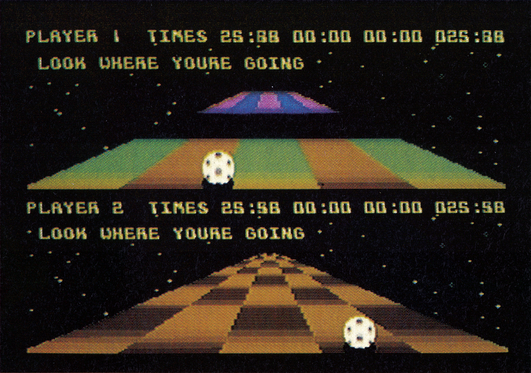
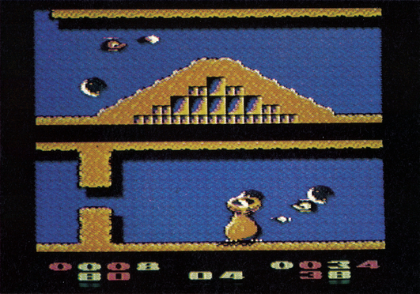

Splitting ist in
Wenn bei einem Computerspiel der Bildschirm in zwei Hälften geteilt wird, nennt man das »Bildschirm-Splitting«. So können zwei Spieler auf einem Computer vollkommen unabhängig gegeneinander spielen.
Spiele, die man zu zweit spielen kann, gibt es viele. Spiele die man zu zweit gleichzeitig spielen kann, schon weniger. Und Spiele, bei denen sich zwei Spieler voneinander unabhängig bewegen können, sind selten. Zu der letzten Gruppe gesellen sich zwei Neuerscheinungen. Durch einen »gesplitteten« Bildschirm ist es möglich, daß die beiden Spieler auf dem Spielfeld in unterschiedliche Richtungen rasen können. Jeder Spieler hat einen halben Bildschirm zur Verfügung. Fährt der eine nach links und der andere nach rechts, dann wird oben nach links und unten nach rechts gescrollt — so einfach ist Splitting.
Gleich zwei gesplittete Spiele warten auf ihren Test: »Kettle« und »Trailblazer« sind vergnügliche Wettrennen mit bizarrer Handlung.
Stellen Sie sich ein Fließband vor, das quer durchs Weltall führt. Dieses Fließband ist mit einem bunten Karomuster versehen und hat auch ein paar Löcher. Auf diesem Fließband muß ein kleiner Ball entlangrollen und -hüpfen, um möglichst schnell am Ziel anzukommen. Dieses einfache Spielprinzip trägt den Namen Trailblazer. Zwei Spieler, oder ein einzelner mit dem Computer als Partner, nehmen an diesem ungewöhnlichen Rennen durchs All teil. Dabei sind auch Tricks erlaubt, wie etwa den anderen vom Fließband zu schubsen.

Die Farben der Karofelder haben bestimmte Bedeutungen. So bremsen manche Felder den Ball ab, andere wiederum beschleunigen ihn oder schleudern ihn gar hoch in die Luft. Auf den Strecken sind genügend Gags versteckt, um die Rollerei so ungemütlich wie möglich zu machen.
Verschiedene Spielmodi runden das technisch sehr gut programmierte Spiel ab, das gerade bei zwei Spielern ungeheueren Spaß macht. Lediglich bei Grafik und Sound hätte man sich ein wenig mehr Mühe geben können. Die Bälle sehen recht mager aus und der Titelsong ist auch nur durchschnittlich.
| Titel | Trailblazer |
|---|---|
| Spielidee | 10/15 |
| Grafik | 10/15 |
| Sound | 9/15 |
| Schwierigkeit | 12/15 |
| Motivation | 12/15 |
| Besonderheiten | zwei Spieler gleichzeitig |
| Hersteller | Gremlin Graphics |
| Preis | 35 Mark (K.), 49 Mark (D.) |
| Bezugsquelle | Rushware, Daimlerstr. 11, 4044 Kaarst 2 |
Wem die Handlung von Trailblazer nicht ungewöhnlich genug war, sollte sich die folgenden Zeilen genau durchlesen: Zwei Teekessel (engl.: Kettle) sind, aus welchen Gründen auch immer, in einem unterirdischen Höhlenlabyrinth gefangen. Beide Kessel haben zur Fortbewegung einen Propeller auf dem Deckel. Zur Selbstverteidigung (man weiß ja nie, was so alles passsieren kann) umkreist jeden Kessel ein Hochgeschwindigkeits-Teebeutel, der auf Knopfdruck gegen Angreifer geschleudert werden kann und dann bumerangartig zurückkehrt.

Das Höhlenlabyrinth hat genau 30 Ebenen. Die Ebenen sind untereinander durch eine Metalltür getrennt. Wie öffnet man so eine Tür? Klar, mit einem Dosenöffner! Dieser Dosenöffner ist wiederum in einer von vielen »Bowels« (übersetzt etwa Eingeweide) versteckt. Zehn Teebeutel-Treffer und die Bowel ist hinüber. War der Dosenöffner drin, darf man gleich zum Ausgang düsen. Äber meist versteckt sich ganz was anderes in der Bowel, zum Beispiel ein fieser Alien oder einfach nur ein paar läppische Bonus-Punkte. Der fiese Alien klaut den Kesseln schrecklich viel Energie — solange man ihm nicht seinen Teebeutel um die Ohren haut. Zu guter Letzt haben auch die Bowels ihre Waffe: Sie schießen mit Luftblasen um sich, die den Kesseln Energie abnehmen können. Geht einem Kessel die Energie ganz aus, ist das Spiel für ihn beendet.
Die an sich neue Idee hinter Kettle entpuppt sich beim näheren Spielen allerdings als ein etwas zu einfaches Sammelspiel, bei dem Zufall und Glück ein höherer Stellenwert als Geschicklichkeit und Gedächtnis eingeräumt wird. Auch im Zwei-Spieler-Modus gibt es einige Schwächen, da man sich nicht gegenseitig eins auswischen kann. Der Schnellere gewinnt halt, gemeine Tricks, die das Ganze etwas auflockern würden, fehlen.
Von der technischen Seite her ist Kettle auch nicht das Nonplusultra. Die auf allen Leveln identische Grafik ist nur durchschnittlich. Dafür sind die beiden Melodien des Spiels exzellent komponiert.
| Titel | Kettle |
|---|---|
| Spielidee | 11/15 |
| Grafik | 10/15 |
| Sound | 13/15 |
| Schwierigkeit | 10/15 |
| Motivation | 9/15 |
| Besonderheiten | zwei Spieler gleichzeitig |
| Hersteller | Alligata |
| Preis | 39 Mark (K.), 59 Mark (D.) |
| Bezugsquelle | Ariolasoft, Postfach 1350, 4840 Gütersloh |
Obwohl beide Programme ihre Mängel haben, beweisen sie doch eins: Am meisten Spaß macht es immer noch, wenn man zu zweit spielen kann — auch wenn jeder seinen eigenen Bildschirm hat.
(bs)